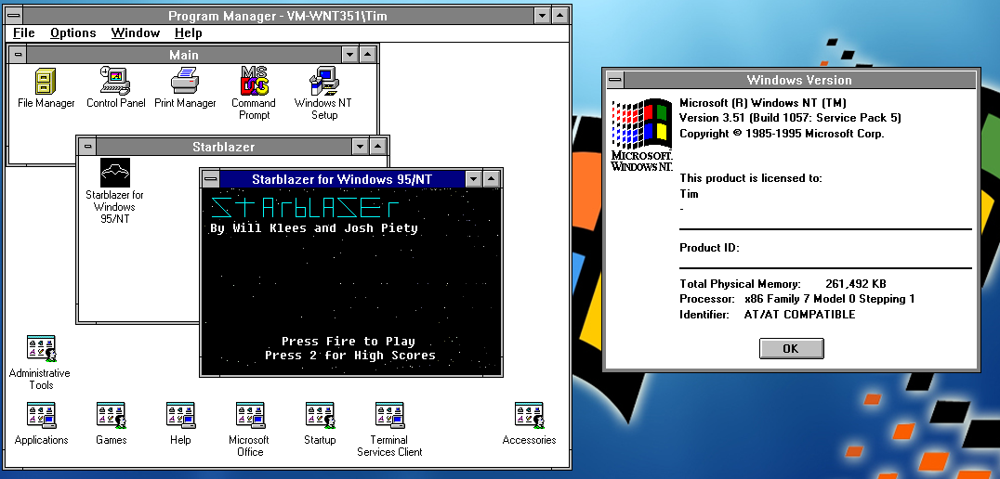
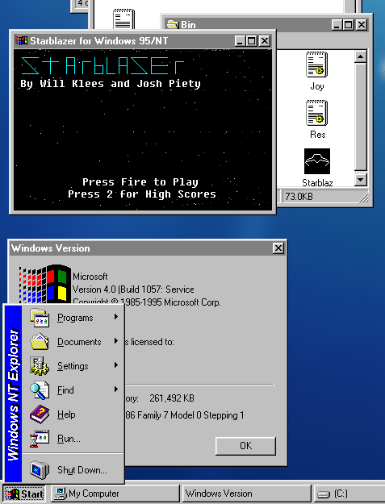
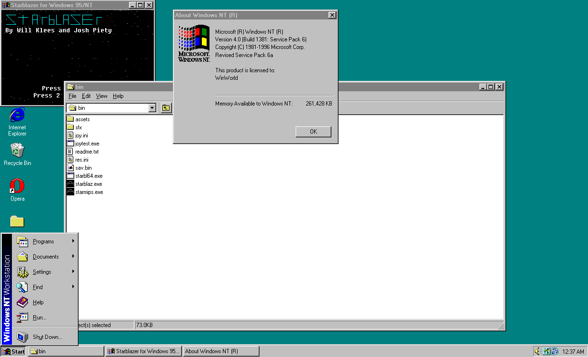
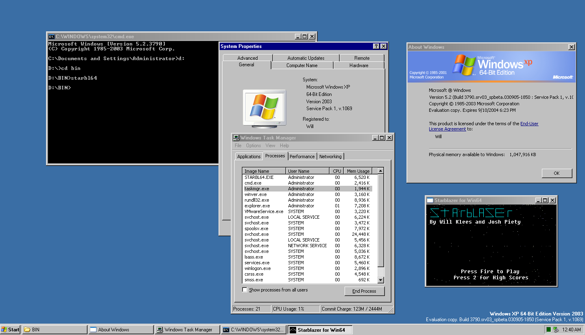

History of Starblazer
The project that became Starblazer can trace its roots back to August 31, 2021. A few days prior was orientation for our high-school computer science class, where the teacher had introduced a semester-long project to create an application. Tasking us to think about it, on the second day of school, I sent a message to my co-programmer:

Intended to be a clone of the 1983 Star Wars vector arcade game, it wasn't long until code began to be written for the game. The initial target was a 286-12 AT-class DOS machine with an 8-bit VGA card. My co-programmer was initially unenthusiastic, wanting to make an NES game instead, but I promised to do most of the code and only rely on him as a consultant, freeing up most of his time for his own side-projects.
By September 9, we had enough code to show off a UI mockup of the game with a scrolling starfield - enough to evoke in the minds of many who saw the prototype, the Star Wars game on which our work was based.

Our intention at the time was to use a 3D wireframe renderer I had written on the Game Boy Advance, porting it over to DOS. The renderer was glacially slow, due to using floating point arithmetic that was unsupported by the ARM7TDMI processor in the GBA, forcing the 16MHz RISC chip to perform software emulation. However, even with fixed-point optimizations (a process that took us into the end of October, due to other work), a spinning cube was still too slow, even on the GBA which was several times more powerful than the AT we were targeting.

Our next idea was sprite scaling, but we also abandoned that for speed considerations. Our proof of concept is here, but we did carry over that code into the intro animation of the title screen zooming into view.

Around this time in early November, the sound code began to take shape (converting NSF tracks from NES games into music suitable for the PC speaker), and we switched to a 2D vector-based renderer on November 17, with an initial proof-of-concept completed at that time. The same day, rotation was added and the enemy art was drawn, seen below.

On November 19, the trench level began to take shape, with the walls being drawn and a single enemy moving around. I decided on using a linked list, though at the time, the sole enemy "bounced off" of the player to go backwards. Later that day, the health bar and laser bar (which would decrease with continuous fire and force you to cool down if you fired for sustained bursts) were added, and by November 20, there were multiple enemies, with the 3D Z-axis projection working properly.
By November 21, there was working collision detection between your lasers and the enemy craft, and on the 23rd, I pulled together a test animation for what was later scrapped, and intended to be used for the end of the game.

An early enemy design that didn't make the cut (look familiar?):

For "Sprint 3", we had the official playable demo of the game, completed November 24. You'll notice the absence of a floor "texture", and no scrolling walls, healing items, or shields, but the core gameplay of exchanging fire with aliens and dodging their attacks is in place by this preliminary playable demo.
Feedback was generally positive, though many lamented the lack of scrolling walls. On November 25, scrolling walls were added.
Due to waning motivation and various bugs, progress cratered on the game, with December seeing only the healing item as a major addition. In January, the credits and a temporary shield were added, completing the DOS version of Starblazer.
Regrettably, the performance targets were not met for the game, and it sat for several months, until a boring summer day in August 2022. My main laptop was being serviced, so I set up an old Dell Latitude D620 (Core 2 Duo T7200) with Windows 7 32-bit, and installed an old copy of Open Watcom. After screwing around for a while, I had a working window with CreateDIBSection that I could write into a framebuffer for, so I decided to do a quick-and-dirty port of Starblazer to Windows using a conservative set of APIs that would work on Windows NT 3.5, Windows 95, or above.
It took only one day - about ten hours of work, on August 9, to complete the demo. Unfortunately, due to limitations of the PlaySound API, sound effects had to be jettisoned (the PC speaker version had them).
The completed version of Starblazer for Windows 95/NT works on everything it claims to. However, on September 5th, the project was revived again. Over the last few days, I had been mulling over the possibility of porting Starblazer to other architectures supported by Windows such as DEC Alpha, MIPS, PowerPC, and Itanium, but thought better of it due to lack of hardware (though check back because I am in contact with someone looking for an Itanium). However, I did decide to use Visual Studio 2005 to compile an AMD64-native version of Starblazer for no practical reason whatsoever.
Bringing the code into VS2005 presented a number of challenges immediately. First of all, I used "new" as a variable name - a big no-no in C++ but fine in C. I could have changed it, but since I also relied on implicit pointer-cast behavior, it was best to just force VS2005 to compile all code as C. Unfortunately, Microsoft's C support at the time was woefully behind the times, being only on C89 despite other vendors having moved to C89, but this proved to not be an issue due to both Borland Turbo C++ (the compiler in which the original game was written) and Open Watcom C/C++ (the compiler in which the Win32 port was written) being C89-only, so my code was compliant on that front.
However, the code immediately crashed in debug mode due to stack corruption. I was aware of issues, which in DOS manifested in spectacular crashes, while they took longer to take effect on Win32, resulting in slowdown over time. However, I could silence the issue I had been unable to track down for months by compiling in release mode, which didn't run the same memory protection checks as debug mode.
The next issue came with the fact that the title screen failed to load properly, the text was mojibake mixed with Japanese characters, and there was no sound.
The issue turned out to be with ANSI vs Unicode text. Windows NT supported both ANSI text, for backwards compatiblity, and 16-bit Unicode text, but Windows 95 supported only ANSI, so Open Watcom used the ANSI versions of all functions for maximum compatibility.
A function like PlaySound is just an alias to PlaySoundA (the sound name is represented by an 8-bit ANSI char string) or PlaySoundW (16-bit unicode wide characters). In Open Watcom, it resolved to PlaySoundA, but resolved to PlaySoundW in VS2005. The solution was simple - use ANSI functions where available and convert to Unicode text where required.
As for the title screen, the issue was with the palette not loading correctly, so I hardcoded that in. This was resolved in later versions - the root cause was that the DOS version ran in 8bpp while the Windows version ran in 16bpp, so a palette lookup was done, converting a char array into a short array. Difficult part was, Open Watcom considered chars to be unsigned by default (a logical behavior), while modern VS considers them signed - normally not an issue, but is an issue when used for array lookup. For example, in palette lookup.
The porting effort went into full swing once again on September 7. My co-programmer had embarked on a port to Linux using SDL, and was using a combination of GCC’s sanitize setting and asan to catch bugs in the project. A memory leak seemed to be apparent in the Windows version of Starblazer (and indeed the DOS version as well, causing crashes in spectacular fashion), and some sort of slowdown, that I believed was caused by this memory leak, permeated the Windows version (the cause turned out to be far more benign). Immediately, a bug surrounding “corruption of the stack variable curShade”, which had perplexed me for some time, was found using GDB - curShade is a char variable, while we used fscanf to read a decimal number (i.e. signed int) into curShade, which corrupted it. In some cases, it caused no issues, but it was a helpful bug. In the entity processing loop, we created a variable called freed to keep track of whether an object has been deleted to prevent it being dereferenced later in the same iteration, which seems to have patched up a memory leak in the game.
Using the Sleep function for frame timing was a rookie mistake in the WIndows version, since the Windows scheduler gave it variable and unstable delay. Using SetTimer improved matters, but the limited resolution of the timers still necessitated a superior solution, to timeGetEvent (part of the Windows Multimedia SDK) was used instead. With issues still cropping up, even if less severe, I initially believed it was a kernel bug, with the scheduler not liking Starblazer, but eventually found that my VMs and spare machines with which I tested Starblazer on older versions of Windows were always in a cold boot state or very nearly, with a few programs open, while my Windows 10 laptop was fully loaded when I tested the game, causing the SSD to be thrashed as memory was paged in and out, the main culprit of the slowdown and latency. It’s still not perfect, but setting the task affinity to real-time sorted out any remaining kinks.
Another addition to the Windows version was sound effects and joystick support, both of which were in the DOS version. In the initial Win32 Starblazer, a quick-and-dirty method of calling GetCursorPos and using WM mouse button events to handle the mouse was used, and PlaySound was used to play back wave-file music. However, this made the game unamenable to different input devices and had no provisions for sound effects, since PlaySound supported only one concurrent track, being designed as a simple API to play back simple system sounds in applications. I could have theoretically played the wave file back from a memory buffer, and then used GetTickCount (or TimeGetTime) and the sample rate to calculate the current “playback head” of the function (in bytes) and modify it in-place, but that would be a dirty hack at best. Using the Windows Multimedia Library (winmm.lib/winmm.dll) was the intended solution, added by Microsoft for Windows 3.0 MME (with Multimedia Extensions) and included in all versions since Windows 3.1 and Windows NT 3.1.The notable two sets of functions for Starblazer are the waveOut and joy series, which allow sending sounds to the sound card and reading the joystick status, respectively. Functions for controlling MIDI devices (both in and out) and receiving digital sound are also provided, but unnecessary for Starblazer. Both sets of functions are deprecated, for DirectSound and DirectInput (which itself was deprecated for XInput), but for Starblazer’s purposes, but the older versions were sufficient, for one, and also not only supported Windows NT 3.51 (which DirectX did not - though NT4 and 95 did), but also meant I didn’t have to use Microsoft’s awful COM (Component Object Model) interface. It’s the same reason I don’t use DirectDraw in Starblazer (which is also deprecated now).
waveOut required only minimal setup to open a sound device, prepare a header, and get sound playing. You can provide a callback function to load more samples, and waveOutGetPosition allows you to find the current play head and modify it to add more sound effects. Unfortunately, waveOut’s paradigm, while it does support multiple concurrent sound effects, isn’t made with multiple streams on a single device in mind.
The functions that stop or pause sound playback only work when there’s only one audio stream, so I had to modify a single stream in-place with a software mixer, only using multiple streams when I absolutely had to, for tracks that would end on their own and not loop.
Before I finished Starblazer for Windows 95/NT, I wanted to add a couple polish features. One of these was attract mode, a common feature of many older video games (particularly arcade games), where if you stayed on the title screen for long enough, a brief auto gameplay demo would loop, periodically returning to the title screen, but I dropped the feature because it would require either a.) a major rearchitecting of the game or b.) a mess of setjmp and longjmp to transfer control between the title screen function and the main loop.
I did add a proper high score display - just a bunch of green text with names and scores of the high scorers, along with the text “TOP STARBLAZERS” in flashing colors at the time of the screen, atop a scrolling starfield. The DOS version’s graphical credits were re-added if you got a high score, along with a name entry screen. A game over screen was also added, in addition to a new readme, and a resource file with an icon for the game. Finally, I switched the video backend back from Video for Windows’ DrawDib to GDI’s CreateDIBSection and StretchBlt due to poor performance of DrawDib.
I initially standardized on Open Watcom for the x86 version and Visual C++ 4.0 for MIPS for the MIPS version (using a QEMU installation of Windows NT 4.0 for MIPS), but as development wound down, I switched to the older Visual C++ 2.0 compiler for all 32-bit architectures.
I haven’t tested the game on Windows NT 3.5 for any architecture, or Windows NT 3.51 for MIPS, but it should work. I haven’t made a DEC Alpha or PowerPC port, since I lack the hardware to do so, and QEMU doesn’t support the versions of Windows NT for either arch (nor is there another capable emulator).
The binary download for the game includes both i386 and MIPS binaries for Win32, and the source code is applicable to both. The next derivative to make was the Win64 port, the process of which differs somewhat from what I outlined before. My target platform was Windows XP x64 Edition, which should be easy given the conservative set of APIs I use, but I wanted to use the oldest compiler possible for maximal AMD64 support (even of early AMD64 betas of Windows).
We know that AMD64 Windows was in development at least as early as 2002, and that’s when the oldest AMD64 compiler from Microsoft that I could get my hands on dates to, from the Windows Server 2003 RTM DDK. The tools are listed as being in beta and aren’t selected by default but you can manually add them, and that’s when I did. I have an early leaked beta of XP x64 that I can use to test the resulting binaries from this compiler, they are likely to work.
Microsoft’s next major AMD64 compiler was from the Windows Longhorn Development Kit from the PDC 2003 - Microsoft’s Professional Developers Conference in October 2003. At that conference, the first publicly released binaries of Windows were AMD64 were released, in the form of the Longhorn Developer Preview - build 4051, which has its problems, particularly in the 64-bit edition, though the early XP x64 beta I mentioned does predate this build, it was leaked later. In May 2004, at the Windows Hardware Engineering Conference, another Longhorn Development Kit for build 4074 at the Windows Hardware Engineering Conference was released, and then in 2005 we have the Windows Server 2003 SP1 DDK and Platform SDK, coinciding with the public release of Windows XP x64 Edition and AMD64 versions of Windows Server 2003, followed by Visual Studio 2005.
The Windows Server 2003 and Longhorn tools use the Microsoft C++ Compiler Version 14, which ended up being used in Visual Studio 2005, so it’s all about the library files, the C runtime in particular. The Windows Server 2003 DDK predates EncodePointer and DecodePointer, in fact it predates the earliest leaked AMD64 versions of Windows. It comes with a full complement of header and library files so it’s theoretically exactly what I need.
I had to muddle around a bit to get the right path to work, since I needed to use the x86 versions of some utilities (notably the linker and resource compiler) but the AMD64 versions of others (the compiler), but using the same switches yielded the same result ,and I didn’t even need to change ANSI text to Unicode or explicitly call the ANSI functions.
Porting to the MIPS version was just as easy. I had Visual C++ 4.0 already installed on my MIPS QEMU system, but in order to avoid dependencies on MSVCRT40.DLL, I installed Visual C++ 2.0 for MIPS, compiled the game, made sure it worked, and threw it into the ZIP file.
I still have a bounty for a few architectures. I want Itanium, Alpha, and PowerPC ports of the Win32 version of the game, and with the source available, interested parties can give it a try. I’m available if anyone equipped to do such a port wants help.
With the cleaned ports to Windows completed, it was next time to port to other platforms. Reintegrating the changes into the original DOS version (compiled with Borland Turbo C++) was not difficult, so next up were the SDL port to Linux (upon which an emscripten/webassembly port for this website would be based), and even a port to the Nintendo Wii, for which the Wii pointer would be used.
Starblazer Runs on Everything
Windows NT Workstation 3.51 (May 1995)

Windows NT 3.51 with Shell Technology Update (NewShell) (May 1995)

Windows 95 (July 1995)
Windows NT Workstation 4.0 (July 1996)

Windows 2000 Professional (Decemeber 1999)
Windows XP Professional x64 Edition Beta (September 2003) (Note on this and future x64 versions - the taskmgr shows that this is a native 64-bit executable)

Windows Code Name "Longhorn" Build 4074 x64 (April 2004)
Windows Code Name "Longhorn" Build 5048 x64 (April 2005)
Windows Vista Beta 1 x64 (July 2005)
Windows Vista Home Premium 32-bit (November 2006)
If you have any screenshots of Starblazer running on interesting or unusual setups, please email you, and I'll make sure to credit you!